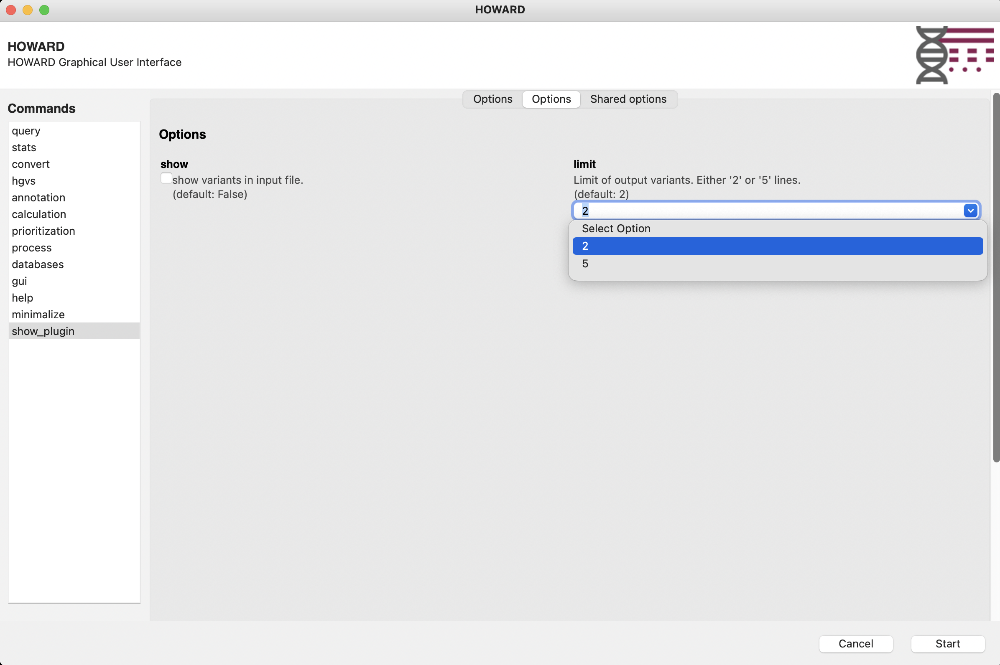
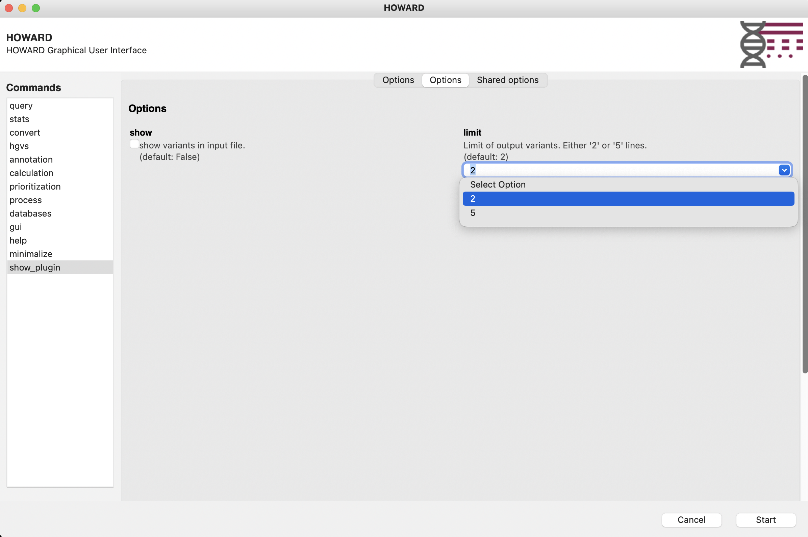
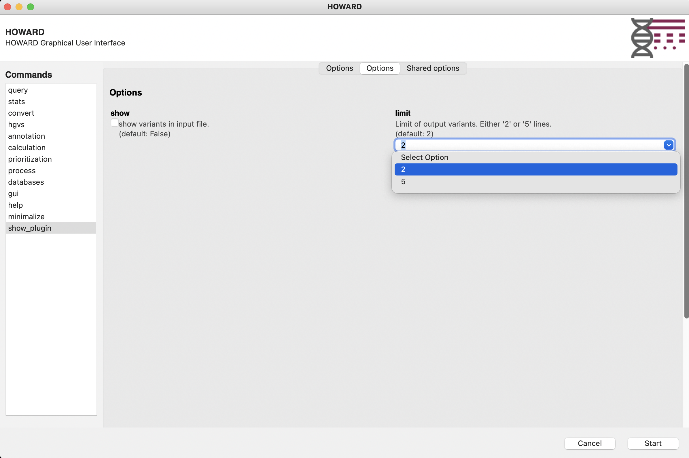

HOWARD plugins are additional module that take advantage of HOWARD object and functions to manage input files.
Plugins are store in ‘plugins’ folder, and follow a specific structure:
plugins
|-- __init__.py
|-- plugin1
| |-- README.md
| |-- __init__.py
| |-- __main__.py
|-- plugin2
|-- README.md
|-- __init__.py
|-- __main__.pyMainly, plugins __init__.py file define enabled plugins,
with variable __all__.
__all__ = ["plugin1", "plugin2"]At least 2 files are needed. The __init__.py file
defines the plugin with a description and a version, if the plugin is
enabled (default False), and information about python code
such as main file (default __main__.py) and main function
(default(main)).
__description__ = "Plugin1 description"
__version__ = "1.0.0"
__enabled__ = True
__main_file__ = "__main__"
__main_function__ = "main"Main plugin file (e.g. __main__.py) need to contain the
main function (e.g. main), and also information about new
arguments for this plugin (e.g. show and
limit, see Python Argparse) and about command such as a
description, help, examples and all avaiable arguments (e.g. existing
input and output arguments).
Example with ‘show_plugin’: files structure, init file, arguments, command, and main function
plugins
|-- __init__.py
|-- show_plugin
|-- __init__.py
|-- __main__.pyPlugin is enable in main
plugins/__init__.pyfile
__all__ = ["show_plugin"]Plugin is defined in
plugins/show_plugin/__init__.pyfile
__description__ = "Show variants in an input file"
__version__ = "1.0.0"
__enabled__ = True
__main_file__ = "__main__"
__main_function__ = "main"Arguments, command, and main function in
plugins/show_plugin/__main__.pyfile
import argparse
import logging as log
from howard.objects.variants import Variants
# Arguments
arguments = {
"show": {
"help": """show variants in input file.\n""",
"action": "store_true",
"default": False,
},
"limit": {
"help": """Limit of output variants.\n""" """Either '2' or '5' lines.\n""",
"default": 2,
"type": int,
"choices": [2, 5],
},
}
# Command
commands_arguments = {
"show_plugin": {
"function": "show_plugin",
"description": """Show variants in an input file.\n""",
"help": """Short description of the plugin1""",
"epilog": """Usage examples:\n"""
""" howard show_plugin --input=tests/data/example.vcf.gz --output=/tmp/example.minimal.vcf.gz --show --limit=5 \n"""
""" howard show_plugin --input=tests/data/example.vcf.gz --output=/tmp/example.minimal.tsv --show \n"""
""" \n""",
"groups": {
"main": {"input": True, "output": False, "param": False},
"Options": {"show": False, "limit": False},
},
}
}
# Main function
def main(args: argparse) -> None:
"""
Query input VCF file and show result
"""
# Log
log.info("START")
# Debug
log.debug(f"Input file: {args.input}")
log.debug(f"Output file: {args.output}")
# Load variants file
variants_obj = Variants(input=args.input, output=args.output, load=True)
# Create query and show results
query = f"SELECT * FROM variants LIMIT {args.limit}"
if args.show:
df = variants_obj.get_query_to_df(query)
log.info(df)
# Export
variants_obj.export_output(query=query, export_header=True)
log.info("END")Plugins will be available on Help command line and HOWARD GUI.
howard show_plugin --helpusage: howard show_plugin [-h] --input input [--output output] [--param param] [--show] [--limit {2,5}] [--config config] [--threads threads] [--memory memory] [--chunk_size chunk size] [--tmp Temporary folder]
[--duckdb_settings duckDB settings] [--verbosity verbosity] [--log log]
Show variants in an input file.
Options:
-h, --help show this help message and exit
--input input Input file path.
Format file must be either VCF, Parquet, TSV, CSV, PSV or duckDB.
Files can be compressesd (e.g. vcf.gz, tsv.gz).
(default: None)
--output output Output file path.
Format file must be either VCF, Parquet, TSV, CSV, PSV or duckDB.
Files can be compressesd (e.g. vcf.gz, tsv.gz).
(default: None)
--param param Parameters JSON file (or string) defines parameters to process
annotations, calculations, prioritizations, convertions and queries.
(default: {})
Options options:
--show show variants in input file.
(default: False)
--limit {2,5} Limit of output variants.
Either '2' or '5' lines.
(default: 2)
howard gui 